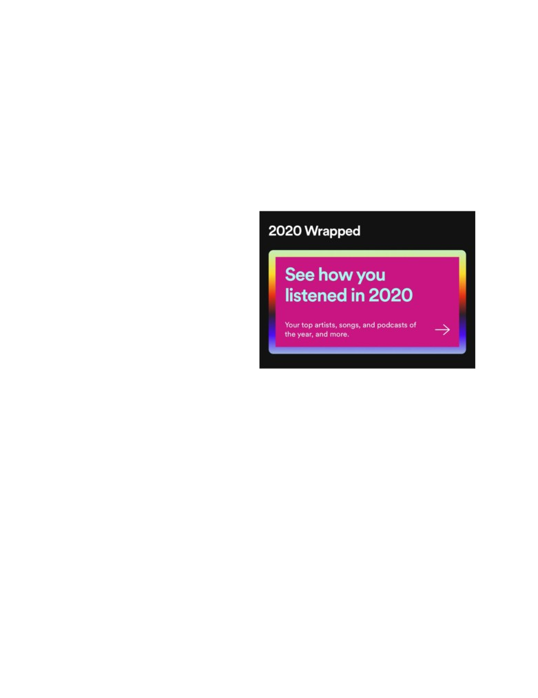
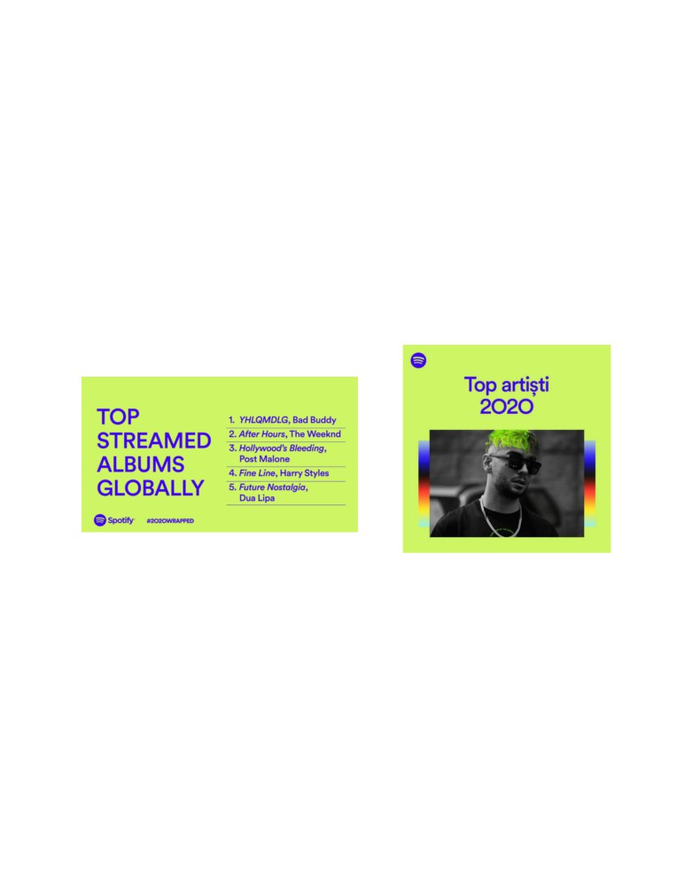

Top-ul artiștilor și melodiilor de pe Spotify în 2020
La finalul anului 2020, Spotify a oferit posibilitatea tuturor utilizatorilor să afle care au fost
artiștii și melodiile cele mai ascultate de aceștia pe parcursul anului. Cu un simplu click am putut
afla care a fost melodia pe care am ascultat-o de cele mai multe ori, dar și cel mai îndrăgit artist
sau trupă. În ciuda faptului că anul 2020 nu a fost unul promițător, pentru foarte mulți dintre noi,
muzica a reprezentat un ajutor în ieșirea din rutina monotonă pe care ne-a inspirat-o carantina, mai
exact pandemia prin care trecem în continuare. Astfel am ales să analizăm situația chiar la noi în
țară.
Potrivit Spotify Wrapped, aceasta
fiind opțiunea prin care putem afla care au
fost preferințele noastre pe parcursul anului,
la nivel global se află în fruntea listei Bad
Bunny și Billie Eilish, iar în România cel mai
ascultat artist este Nane.
La nivel global, cei mai ascultați
artiști sunt Bad Bunny, Drake, J Balvin, Juice WRLD, The Weekend, iar în rândul artistelor sunt
Billie Eilish, Taylor Swift, Ariana Grande, Dua Lipa și Halsey. Iar ca și gen muzical, muzica pop
a fost cea mai îndrăgită de ascultători, oferind o stare mai bună prin ritm-ul alert în special pe
durata pandemiei.
În rândul melodiilor, cele mai ascultate la nivelul globului au fost „Blinding lights”- The
Weekend, „Dance Monkey”- Tones and I, „The Box”- Roddy Ricch, „Roses”- SAINt JHN, „Don’t
start now”- Dua Lipa.
La finalul anului 2020, Nane a fost cel mai ascultat artist în România. Nane, pe numele real
Ștefan Avram Cherescu, a ajuns să fie unul dintre cei mai ascultați rapperi din România, mai ales
prin rândul adolescenților. Acesta și-a început cariera în anul 2007 cu primul său mixtape „Pagini
din jurnal”, iar apoi în 2008 a început să aibă succes prin lansarea altor piese.
În top-ul realizat de Spotify pentru țara noastră, pe lângă Nane se mai enumeră: The Scotts,
Ian, The Weekend, Killa Fonic. După cum se poate observa în top se regăsesc și numele altor artiști

români, ce sunt la fel de cunoscuți ca fiind „trapperi” sau „rapperi”. Dar îl regăsim și pe The
Weekend ce se află și în top-ul pe plan global. Acești artiști sunt foarte cunoscuți prin rândul
adolescenților.
Cele mai ascultate piese de utilizatorii români de Spotify sunt „Roses”- SAINt JHN
ocupând locul unu în top, iar apoi „Blinding lights”- The Weekend, „The Box”- Roddy Ricch,
„Highest in the room”- Travis Scott, „Miami Bici”- Killa Fonic.
Albumele cele mai cunoscute din anul 2020 au fost „YHLQMDLG”- Bad Bunny, „After
Hours”- The Weekend, „Hollywood’s Bleeding”- Post Malone, „Fine Line”-Harry Styles, „Future
Nostalgia”- Dua Lipa.
Surse: